В наш цифровой век создано много интересного и любопытного, появилась возможность увидеть свою фотографию на экранах компьютера в цифровом виде, то есть даже если мы посмотрим на эту фотографию через сто лет она не измениться, в отличии от напечатанных которые могут испортится. А как же все-таки фотографии засовывают в компьютер, конечно же существуют цифровые фотоаппараты, но они очень дорого стоят и речь мы будем ввести не о них. Сегодня мы поговорим о сканерах и их разновидностях. Сканеры делятся на:
Согласно информации, предоставленной "Компьюленте" компанией Epson, 1 февраля 2004 года в продажу должен поступить уникальный сканер Epson Perfection 4870 Photo. Устройство позволяет сканировать обычные документы (фотографии, текст, таблицы), а также слайды: в первом случае максимальное разрешение достигает 4800 x 9600 dpi, во втором - изображение на 35-миллиметровой пленке может быть увеличено до размера 600 х 800 мм (А1).
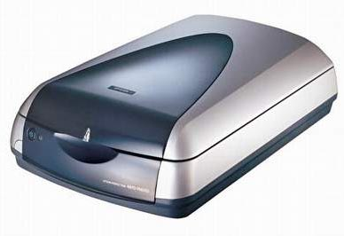
Наиболее же интересной особенностью Perfection 4870 Photo является наличие фирменной технологии под названием Digital Ice. Задача данной системы заключается в максимальном повышении качества картинки за счет уменьшения действия поверхностных дефектов носителя. Другими словами, Digital Ice "убирает" царапины, пыль, трещины и т.п., делая изображение чище и четче. При этом сканер использует одновременно аппаратные методы и программные инструментарии, благодаря чему цифровая копия документа выглядит намного лучше, нежели при применении других корректирующих алгоритмов. Работает Digital Ice следующим образом: в процессе сканирования используются сразу две независимые лампы, свет от которых отражается под разными углами. Последующее сравнение сигналов позволяет составить карту дефектов, идентифицировать их тип и точное расположение на изображении. На заключительном этапе Digital Ice пытается устранить погрешности путем изменения параметров изображения в нужных областях. Кстати, эта же система гарантирует более точное распознавание текста, что очень важно при обработке факсов, выцветших документов и пр.
Японская компания Canon представила новый планшетный сканер CanoScan 5200F формата A4 со встроенным слайд-модулем. Сканер рассчитан на использование с компьютерами под управлением операционных систем Windows 98, Me, 2000, XP или Mac OS X версии 10.1.3 и выше. Устройство подключается к ПК по скоростному интерфейсу USB 2.0, при этом Windows 98 и Mac OS X версий до 10.2.7 поддерживают лишь протокол USB 1.1. Габаритные размеры новинки - 285 х 512 х 112 мм, вес - около 4,1 кг.
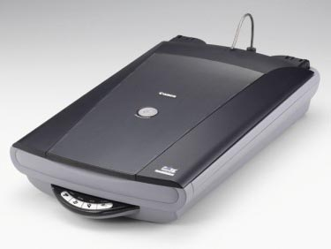
В новинке используется ПЗС-линейка Canon's Hyper CCD II ex, поддерживающая 16-битную глубину цвета; максимальное оптическое разрешение устройства - 2400 х 4800 точек на дюйм. Область сканирования - 216 х 297 мм. Благодаря встроенному слайд-модулю возможно сканирование отрезков 35-мм фотопленки с шестью кадрами. В сканере реализована система FARE Level2, позволяющая удалять следы пыли на получаемом изображении.
Барабанный сканер (сканер полистовой подачи), это замена ручному сканеру . Его особенность заключается в том, что он занимает значительно меньше места на рабочем столе в отличие от планшетных сканеров. Хотя сканеры с полистовой подачей способны сканировать картинки и конвертировать их в оцифрованные изображения не хуже своих планшетных собратьев, большинство пользователей, отдавших предпочтение планшетным сканерам.
Также сканера для профессиональных работ.
Существуют сканера которые способны сканировать трёх мерно. Традиционные лазерные сканеры. Хотя они и лишены практически всех недостатков предыдущих устройств (чем и объясняется их широкое распространение), но и они не лишены недостатков. Это и очень высокая их стоимость, и весьма ограниченные размеры сканируемых объектов, низкая производительность (особенно для систем с точечной проекцией). К тому же данные системы, если их и удастся использовать для сканирования человека весьма не безопасны - в частности для глаз. Представление о подобных системах могут дать VIVID 700 от Minolta (на фото слева) или Digibot II от Digibotics (на фото справа).
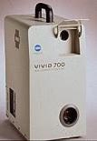
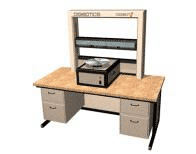
Существуют 3D сканеры способные сканировать и человека, не нанеся ему вреда. Полностью автоматические системы, снимающие человека в полный рост за 12 сек., однако весящие при этом около 450кг, использующие в качестве рабочей станции для обработки - Silicon Graphics Indigo2 Extreme или более мощные системы. Цену таких систем в частности - WB4 от Cyberware и представить страшно.
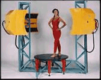
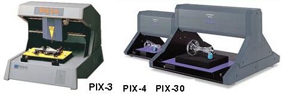
Трехмерный сканер из экзотической новинки уже превратился в необходимый инструмент для моделирования прототипов и изготовления трехмерных деталей в промышленности или для создания компьютерных 3D-моделей в анимации и Web-дизайне. Первой моделью трехмерного контактного сканера, выпущенного фирмой Roland, был сканер PICZA PIX-3, быстро завоевавший одобрение специалистов. Новые модели PIX-30 и PIX-4 серии PICZA делают доступными новые возможности 3D-дизайна. Они значительно расширяют возможности сканирования по сравнению с моделью PIX-3. Установленный в них активный пьезосенсор Roland (R.A.P.S.) обеспечивает чрезвычайно высокую точность сканирования с минимальным шагом в 50 микрон. Вы сможете отсканировать любые проекции объекта и сохранить трехмерные данные в файлах, выбирая формат по своему усмотрению. Эти данные могут использоваться в широком диапазоне приложений, включая графические редакторы программы СAD/CAM-дизайна, и специализированные пакеты для трехмерной обработки материалов
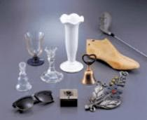
PIX-30 имеет зону сканирования 304.8 мм (длина, ось X) x 203.2 мм (ширина, ось Y) x 60. 5 мм (высота, ось Z), а PIX-4 - 152.4 мм (длина, ось X) x 101.6 мм (ширина, ось Y) x 60.5 mm (высота, ось Z). Можно устанавливать на рабочий стол объекты высотой до 130 мм (PIX-30) или до 70 мм (PIX-4) и сканировать верхнюю часть объекта толщиной 60.5 мм. Высокая точность сканера PICZA позволяет установить шаг сканирования по оси Z 0.025 мм и от 0.05 до 5 мм по осям X и Y. Благодаря высокой чувствительности пьезосенсора, PICZA может сканировать широкий диапазон объектов, включая такие мягкие, как свежие фрукты и модели из пластилина, которые представляют трудность для обычных контактных сканеров. PICZA также может сканировать прозрачные предметы, что абсолютно невозможно для оптических сканеров, потому что лучи света проходят насквозь, не отражаясь.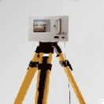
Так же существуют лазерные сканера которые безопасны для глаз. Эта система основанана бесконтактном измерении при помощи лазера. Сканер применяется для наземного сканирования, сканирования карьеров, зданий и других сооружений. Данный прибор состоит из сканирующей головки, блока перезаряжаемых аккумуляторов и карманного компьютера, при помощи которого осуществляется управление сканирующей головкой. Для удобства сканирования на задней панели прибора имеется экран, на котором мы можем видеть участок сканирования. Область обзора - 40 градусов по горизонтали и по вертикали. Также во время сканирования можно задать определённую область сканирования. Весь отснятый материал представляет собой файл, содержащий техническую информацию по данному объекту (координаты, мощность лазера) и цифровые фотоданные, представленные в виде "облака точек", которые вмесле образуют картину по данной области съемки. Все данные сохраняются на съемной Flash карте.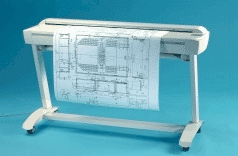
Широкоформатный монохромный сканер с 50-дюймовой (1270 мм) областью сканирования. Идеально решение для всех, кто работает с черно-белыми или монохромными чертежами, картами, фотографиями, сепиями, синьками и т.д.. Превосходно передает оттенки серого. Встроенная логика улучшения качества изображений позволяет в ряде случаев получать копии более отчетливые, чем оригинал. В паре с широкоформатным принтером может выполнять функции копировального комплекса. Panorama 2250 - разрешение 400 dpi.| Модель | Panorama |
| Ширина тракта | 51,5" (1310 мм) |
| Максимальная толщина носителя | 0,6 дюймов (15 мм) |
| Ширина сканирования | 50" (1270 мм) |
| Скорость сканирования | 7 c/A0 (400 dpi) |
| Максимальное разрешение | 800 dpi |
| Аппаратное представление цвета | 12-битное представление серого цвета и аппаратный выбор 8 "лучших" бит для передачи на компьютер |
| Программное обеспечение | JETimage BASE (в поставке), JETimage Pro (опция), WIDEimage (опция) |
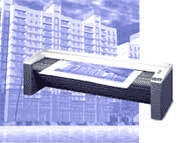
Монохромный сканер для больших объемов работ с высокой скоростью сканирования. Прекрасно подходит для работы с большими проектами в САПР и репрографии.С первого прохода Select Pro может сканировать черно-белые изображения и оттенки серого с превосходным качеством.
Сканер Select Pro отличается способностью быстро и точно сканировать сложные и насыщенные деталями документы благодаря специальным программным средствам обработки изображения от VIDAR. Select Pro -- надежный и экономически оправданный сканер для офиса, конструкторского бюро или репрографической фирмы.
Технические характеристики монохромного сканера TruScan Select Pro
| Ширина тракта | До 1060 мм |
| Ширина области сканирования | До 965 мм |
| Толщина носителя | До 3 мм |
| Длина области сканирования | Не ограничена |
| Число уровней серого | 256 |
| Оптическое разрешение | 400 dpi |
| Макс. разрешение | 1600 dpi |
| Точность | 0.1% или 1 пиксел |
| Скорость | 15,2 мм/c при 200 dpi |
| Вычислительная платформа | Windows 95/98/NT, UNIX |
| Интерфейс | SCSI |
| Программное обеспечение TruInfo | Обеспечивает различные функции редактирования растра, такие как копирование, вырезание, вставка, поворот, зеркальное отображение; уникальная функция автоматического выравнивания фрагментов изображения без участия оператора; автоматическое и легкое в использовании увеличение изображения |
| Условия эксплуатации | Температура от 10° до 35°C при влажности от 15% до 85% |
| Требования по питанию | от 100 до 250 В переменного тока (без адаптера) при частоте 47-63 Гц |
| Потребляемая мощность | 90 Вт |
| Габариты | 124 см / 70 см / 99 см (ширина/толщина/высота) |
| Вес | Сканер: 41 кг (в упаковке: 43 кг) Подставка: 24 кг (в упаковке: 26 кг) |
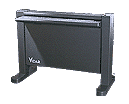
Первый в мире цветной широкоформатный сканер с возможностью upgrade!Широкоформатный цветной сканер, 24-бит RGB, оптическое разрешение 400 dpi, 3 степени модификации.
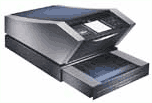
Холдинг АПОСТРОФ, официальный дистрибьютор Imacon в России, сообщает своим клиентам и дилерам о выпуске новой модели профессионального сканера Flextight Progression III Как и предыдущая модель, отлично себя зарекомендовавшая, Progression III совмещает в себе две технологии сканирования: "виртуальный барабан" и видоизмененную планшетную схему с подвижным электростатическим столом. На сегодняшний день это единственный в мире сканер, способный сканировать с высочайшим качеством и скоростью как прозрачные, так и непрозрачные оригиналы формата до А3+ (312х445 мм).В Progression III использован улучшенный программно-аппаратный механизм фокусировки, позволяющий сканировать с оптическим разрешением до 6300 dpi (предыдущая модель Progression поддерживала разрешение до 5760 dpi). Теперь любое разрешение, выбранное оператором для финального сканирования, является истинным оптическим. Ранее использовались только фиксированные значения, и поэтому каждый скан требовал сложного алгоритмического пересчета, сопровождавшегося потерей качества (режим Speed) или времени (режим Quality). Плавное изменение оптического разрешения, реализованное в Progression III, позволяет полностью решить эту проблему. Благодаря применению улучшенной схемы управления оптикой, сканер отлично справляется не только с плоскими, но и трехмерными оригиналами: новая модель поддерживает глубину резкости до 10 мм. Динамический диапазон сканирования в Progression III расширен до 4.2 D; глубина цвета составляет 14 бит на канал. Режимы сканирования включают в себя CMYK (24, 32 и 48 бит), RGB, а также полутоновой (grey scale) и штриховой (line art) режимы. Предусмотрена возможность пакетного сканирования. Максимальный размер файла достигает 1,2 Гбайт. Для связи с компьютером используется интерфейс SCSI или Firewire (через адаптер, который поставляется в комплекте). rogression III работает под управлением программного обеспечения нового поколения FlexColor. Это ПО полностью поддерживает работу в ICC-окружении, имеет мощный механизм управления цветом и осуществления первичной обработки отсканированного изображения. Большое количество предустановленных профилей устройств и различных типов пленок, а также возможность их создания и редактирования, позволяют добиться высокой точности цветопередачи. В программе FlexColor реализованы возможности аппаратной настройки сканера, такие как управление оптической расфокусировкой, яркостью источника света и др. Пользовательский интерфейс имеет сходство с интерфейсом Adobe Photoshop, что делает его интуитивно понятным для большинства операторов. Кроме сканера, данная программа поддерживает работу с цифровыми камерами Imacon. Пока что существует Все перечисленные возможности полностью реализованы как для Мас, так и для PC.
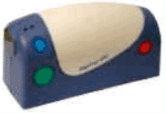
Digicam 620 от Abera Technologies представляет собой портативный симбиоз сканера и цифровой камеры. Это устройство позволяет выполнять крайне широкий круг задач. Digicam 620 позволяет сканировать документы и картинки откуда угодно, функционируя а стандартных батарейках AA. Такое устройство может быть полезно для сохранения картинок и фотографий из газет и журналов, позволяет сканировать даже граффити со стен. акой сканер может сохранять до 300 страниц текста или до 20 качественных цветовых фотографий. Также поддерживается технология оптического распознавания текста.